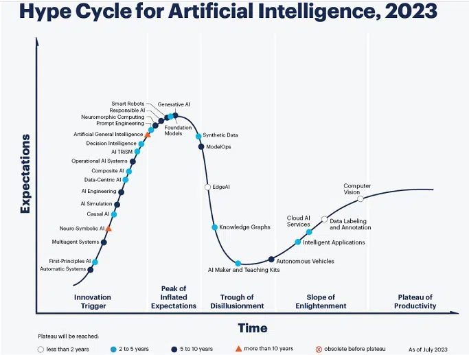

Digitix08's Testsite |
|
| Home | Search Login Games Articole parinti Pastila tehnică |
|
P018 Tehnicã Știați cã în ceea ce privește noile tehnologii, firma Gartner a propus curba Hype? Aceasta aratã într-un mod non analitic însã foarte sugestiv modul în care o nouã tehnologie este propusã și adoptatã. Pe scurt, parcursul oricãrei noi tehnologii duce dupã inițiere (brevetare, cercetare inițialã, mediatizare) la o creștere disproporționatã a așteptãrilor; forumurile tehnice și mass media se întrec în previziuni din ce în ce mai optimiste, pânã când dezavantajele încep sa prevaleze. Urmeazã o cãdere bruscã a încrederii, pânã într-o așa-zisã vale a deziluziei - practic nimeni nu mai e interesat sã dezvolte sau sã investeascã. Dupã aceastã etapã, echipa care continuã dezvoltarea e posibil sã ajungã în etapa de maturizare, unde performanțele și aplicabilitatea sunt demonstrate. Pãrerile sunt împãrțite, în sensul în care e foarte dificil sã cuantifici gradul de încredere al unei tehnologii, curba Hype fiind consideratã o abordare neștiințificã. Mai mult, un studiu fãcut pe analizele curbelor Hype din ultimii 20 de ani indicã multe inexactitãți. Totuși, foarte multe institute de cercetare, firme sau fonduri de investiții utilizeazã curba Hype pentru stabilirea direcțiilor strategice de dezvoltare. Aceste curbe se fac astãzi pe domenii specifice sau chiar pe nișe tehnologice (ex: inteligența artificialã, fabricația aditivã). Atașez și un exemplu actual cu tehnologiile emergente. Extrapolând, aceastã curbã a așteptãrilor, dezamãgirilor și a optimismului ponderat o experimentam adesea: în sport, în politicã, în finanțe, la un nou serviciu... sau cum relaționeazã un copil cu o jucãrie nouã!.. Ca și lecție învãțatã, e bine sã înțelegem cã un nou produs - realmente inovativ - va avea niște performanțe rezonabile doar dupã ce acesta a ajuns în perioada de maturitate. Deci... Atenție pe ce cheltuiți banii! Nu în ultimul rând, trebuie menționat cã majoritatea tehnologiilor noi și a invențiilor nici nu ajung în faza de maturitate. Prin urmare nu va luați dupã val! Consultați-vã cu un specialist dacã vreți sã nu rãmâneți nu doar dezamãgiți ci și fãrã bani. Vorba unui prieten: dai un ban dar știi cã... nu-l mai ai 😎 https://images.app.goo.gl/wSQohPn1sSjvCtWp9  |
|